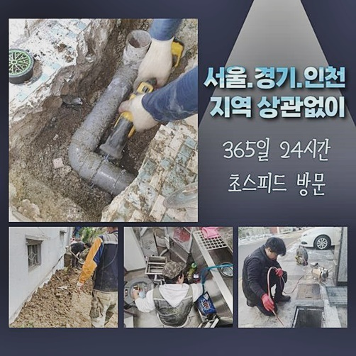
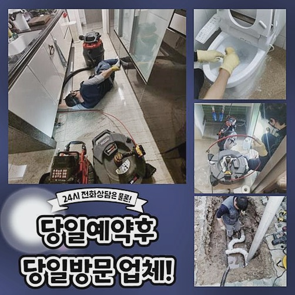
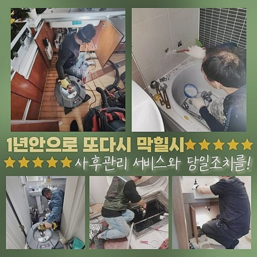
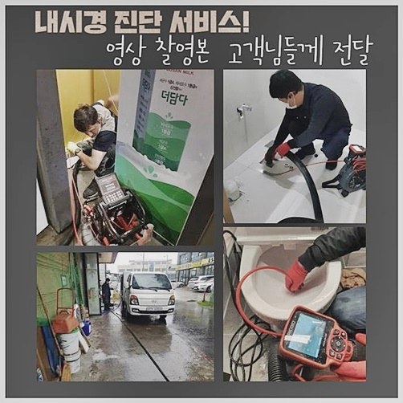
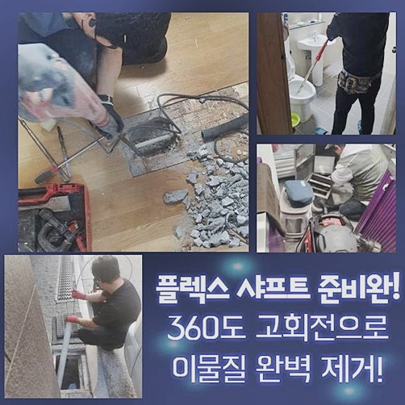
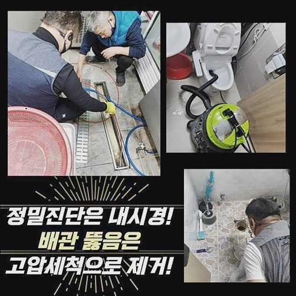
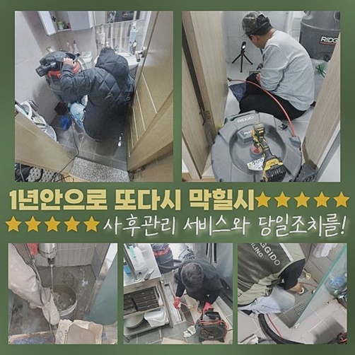

🏠 광진구 광장동화장실뚫음 화양동 오수맨홀청소 설비출장
용인 하수구막힘 전문 시공 후기

📋 작업 개요
- 위치: 용인
- 서비스 유형: 하수구막힘, 배관막힘, 맨홀막힘, 누수수리, 역류해결, 뚫는업체, 배관청소, 고압세척
- 작업 일시: 2024. 6. 24. 18:26
- 업체명: 하수구수사대 (010-5615-2118)
🔍 문제 상황
광진구 광장동화장실뚫음 화양동 오수맨홀청소 설비출장
막히는현상을 확실하게 뚫어버리는 하수구전문업체입니다
이번시간엔 어디서든 중요시되는 하수구와 관련하여 알려드리겠습니다
작업했던 내용을 토대로 하수구막힘에 대하여 공개해볼게요
막히는문제를 처리하려면 전문적으로 이루어진 저희가 발행한 이번글이 도움이되실거에요
욕실배수구 막힘때문에 불편을느끼신다는 고객분의 현장에 다녀왔죠
최근들어 물이느리게 흘러가더니 배관통로가 막히게되서 흐르지않는다고 말해주셨습니다
막혀버린 하수도를 뚫으려고 여러의 장비를 준비해서 고객의댁으로 출동하였죠
도착하고나서 욕실쪽부터 살펴보았죠
배수구덮개부분을 들어낸뒤 안쪽상황을 꼼꼼히 살폈습니다
하수구입구까지 물이차있었죠
약간의물만 흘려보내보았지만 정상적으로 흐르지못하고 역류증세까지 발생한 상태였답니다
우선은 막고있는물을 제거하고자했죠 청소기처럼 빨아들이는 석션장비를 투입했죠
배수구안속에 소량의오염물로 인해서 단순막힘정도라면 석션기계로 빨아들이는것으로 배수관막힘이 뚫릴수있죠

🔎 원인 분석
💡 전문가 진단: 정밀 진단 장비를 사용하여 슬러지의 고착 여부를 판명하고 타격/세척 작업을 실시했습니다.
물을흡입했지만 막힌원인인 석회물이 제거가되지 못했답니다 이번현장의 경우에는 가벼운막힘이 아니었는데요
안속에무언가 막고있는게 확실했습니다 그렇기때문에 하수관안을 파악해보기로했죠
하수도안을 파악하게해주는 전문기계를 투입하기위해선 넘쳐버린물을 제거해야만해요
한번더 석션장비로 배관내부의 물을빨아올렸어요 물빠짐이 완료되고 하수관내시경을 집어넣었어요
하수도내시경은 긴관쪽끝에 모니터링시켜주는 카메라장비가 달려있는기계에요
장비없이는 살펴볼수가없는 하수도내부의 모습을 내시경화면으로 파악시켜주는 장비랍니다
내시경카메라로 검수를진행했죠 입구쪽부터 다량의 석회물이 퇴적되어있는것이 보였는데요
고착물질이 들어가있다는건 오래도록 침수상태였다는 의미입니다
시간이지남에 따라서 단단히 굳어지는 고착물질은 바위같이 단단하다보니 없애기가 어렵답니다
깊게진입하여 내부속까지 점검해보았죠
머리칼이 뭉치고뭉쳐 굴러다녔어요 배관안속의 구부러진부분에서는 잔여물질들이 뭉쳐서 퇴적되었어요
신속히 오염물질들을 소거하여 청소작업을 해줘야하는 긴급한 상황이었답니다
단단한오염물을 과도하게 없애려고하면 배관안에 손상을입힐수있죠
하수관이 깨지면 누수문제가 발생하는등 2차피해가 일어날수있습니다
화학적으로 작업하고자했죠

🔧 작업 과정
석회물을 누그러뜨려주는 하수구약품을 부었는데요 뽀글뽀글 거품이생기며 퇴적되었던 석회가 녹기시작했죠
시간이지날수록 석회가 부드러워진다면 잘게분해해서 떼어낼수있죠
중화가 완료되고나서 세척과정을 이어나갔죠
샤프트기기를 사용하기로했어요 샤프트기계는 노즐끝에 사슬이달려진 장비인데요
모터를키면 쇠사슬쪽이 돌아가는데 회전력이 발생하며 고착물질들을 분해한답니다
녹은이물과 잔여물을분쇄하여 빨아올릴수있도록 진행했답니다
샤프트기를 사용하면 갈아짐과동시에 하수구세척이 가능하답니다
사슬이회전될때 사슬범위를 조정해서 작업의범위를 조절시킬수있죠
하수구가 크든작든 크기에맞추어 세척이가능하여 효과적인 작업과정이 이뤄질수있어요
깊숙하게 자리잡고있는 이물까지 깔끔하게 작업했는데요
이물제거작업시 중간중간마다 내시경기계를 활용했는데요
내시경장비로 배관속을 살펴가며 잔여물질이 쌓인곳들을 뚫고자했어요
작업도중에 물을흘려보내며 분해가 잘이루어지도록 도와주었습니다
오염물질이 두텁게 쌓여있다보니 한번에 세척으로는 해결할수없었어요
하수도내시경과 분해장비를 여러번 이용하면서 반복하여 진행해주었습니다
욕실바닥은 샤워할때나 청소하게될때 모발과 모래같은 작은것들이 하수구내로 진입하기 쉽다고할수있죠
욕실배수구 거름망설치를 통해서 작은덩어리가 유입될수없게끔 꼼꼼하게 막아야해요
분해한 찌꺼기이물을 물과빨아들여 제거해주었어요
꿀렁이는 소리를내면서 잔여물들이 제거되었죠 석션기통이 가득찰만큼 상당한 양이었습니다
배수구청소를 마무리한뒤 또 내시경기기로 체크해봤습니다
퇴적되었던 석회물들이 깔끔하게 소거되었어요 내부쪽의 오물들도 보이지않았죠
하수도벽이 깨끗하게 변화된것을 볼수있었어요 마무리과정으로 의뢰자와함께 배수상태가 어떠한지 테스트해봤죠
물을받은뒤 하수구에 흘려보냈습니다


✅ 작업 완료
원활하게 물이흘러나가는걸 파악시켜드리고서 마치게되었어요
오래된고착물이 주된원인이었던 하수도막힘 현장이랍니다
오늘 작업한것처럼 확실하게 뚫어내기위해선 원인을우선 파악한뒤 그에맞도록 해결책들을 마련해보는게 중요한데요
막힘문제가 발현되었다면 여러경험을 보유한 하수구전문 업체를찾으세요!
60분이내로 현장방문이 가능할뿐아니라 분명하게 수리계획을 공개해드리므로 염려마세요!
저희가 출동해서 고객분께서 안심하실수있도록 시작과끝까지 깔끔하게 해결해드릴테니 안심하시고 상담해보세요!




⚠️ 베란다 누수 및 방수 관리 방법
- ✅ 비가 많이 올 때 창틀 주변이나 아래층 천장에 얼룩이 생기는지 정기적으로 확인해 보세요.
- ✅ 우수관 주변 실리콘 마감이 들뜨거나 깨진 틈새가 있는지 손상 여부를 수시로 체크하세요.
- ✅ 베란다 바닥 타일의 줄눈(메지)이 소실되면 그 틈으로 물이 침투하여 누수가 유발됩니다.
- ✅ 누수 의심 증상 발견 시 방치하면 아래층 손실이 커지므로 즉시 전문가의 진단을 받으십시오.
💡 핵심 정리
- 확실한 장비 작업(내시경 점검 및 샤프트 스케일링)으로 원인을 뿌리 뽑습니다.
- 작업 후 1년 이내에 동일한 부위 재발 시 100% 무상 A/S 서비스를 보장합니다.
- 서울 · 경기 · 인천 전 지역에 24시간 언제든 긴급 출동할 수 있도록 항시 대기 중입니다.
❓ 자주 묻는 질문 (FAQ)
🚨 용인 하수구막힘 문제로 고민이신가요?
정확한 원인 진단과 확실한 시공으로 재발 없는 해결을 약속드립니다.
24시간 긴급 출동 | 서울 · 경기 · 인천 전지역 | 1년 내 재발 시 무상 A/S